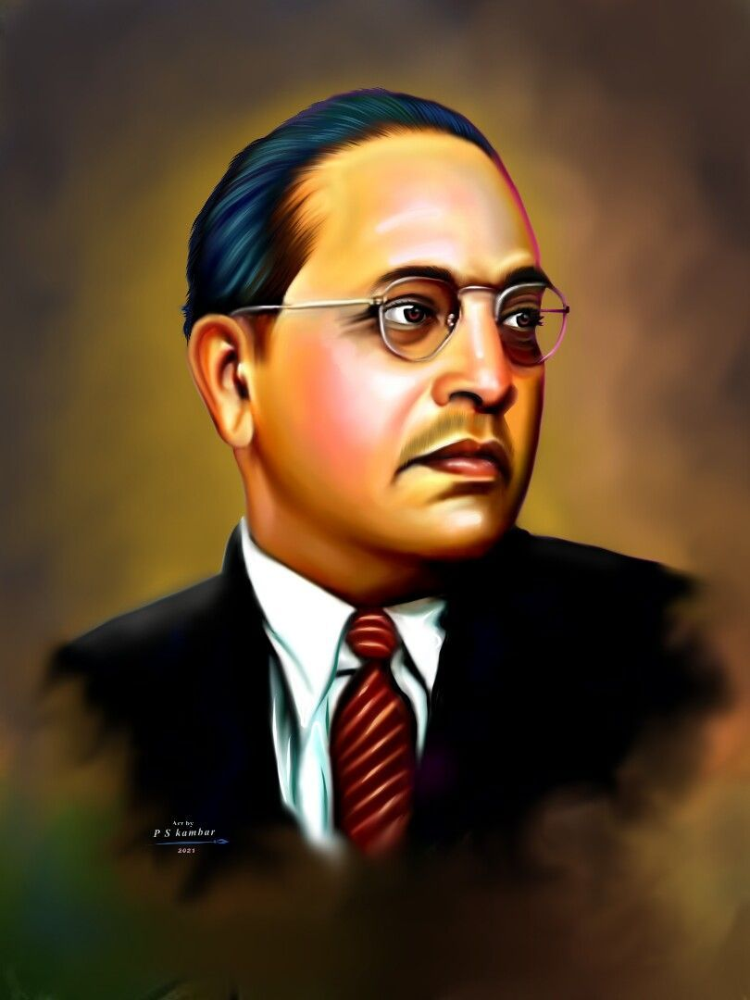

Dr. B . R. Ambedkar
1891 - 1956
Ambedkar is the Father of the
Indian Constitution
Dr. Bhimrao Ramji Ambedkar, popularly known as Babasaheb Ambedkar, was one
of the most influential leaders in Indian history. Born on April 14, 1891, in a Dalit
(formerly untouchable) family, he rose through immense social and economic
challenges to become a jurist, economist, social reformer, and the principal architect
of the Indian Constitution. He dedicated his life to fighting against the caste system
and social discrimination in India...
Biographies
- Ambedkar was the 14th and youngest child of his parents.
- Despite being highly intelligent, he was often segregated in school due to his caste.
- He was the first Dalit to pursue higher education abroad.
- He wrote several influential books, including Annihilation of Caste.
- He founded journals like Mook Nayak and Bahishkrit Bharat.
- He established the Independent Labour Party in 1936.
- He helped found the RBI in 1935.
- He emphasized constitutional morality and the rule of law.
- He opposed Article 370 and pushed for integration of princely states.
- Converted to Buddhism and led a mass movement in 1956.